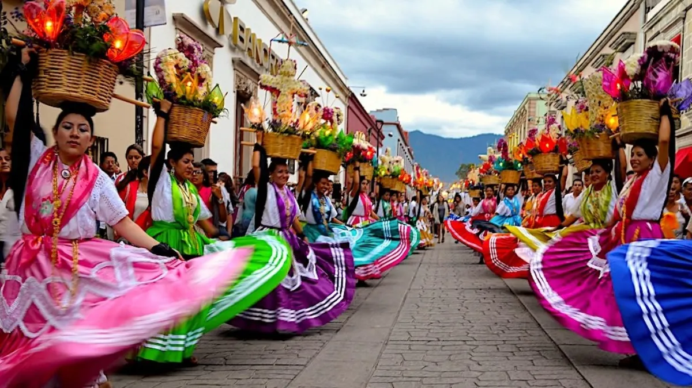

La guelaguetza Oaxaca

Resultado de imagen para guelaguetza Guelaguetza: magia, tradición y cultura. La fiesta de la Guelaguetza, la cual se deriva del vocablo zapoteca "Guendalezaa" que significa "ofrenda, presente, cumplimiento"; también se le conoce como “Fiesta de los Lunes del Cerro”.
La Guelaguetza (del idioma zapoteco guendalizaa, "cooperar") es una celebración que tiene lugar en la ciudad de Oaxaca de Juárez, en el estado de Oaxaca, en México. Forma parte de los cultos populares a la Virgen del Carmen, razón por la cual se celebra los dos lunes más cercanos a la festividad católica de esta advocación mariana (el 16 de julio). También se conoce con el nombre de los lunes del Cerro, puesto que el corazón de la festividad es el cerro del Fortín, que domina el centro de la ciudad de Oaxaca. En su concepción más amplia, la Guelaguetza representa no solo cooperar, sino hace referencia a los tiempos antiguos en donde la ciudad de Oaxaca se llamaba, toda una actitud o cualidad con la que se nace, el amor al prójimo de cada habitante zapoteca hacia sus hermanos, una actitud de compartir la naturaleza y la vida, costumbres y tradiciones.
Es considerada como la mayor fiesta Folklórica del continente americano, juntando en ella miles y miles de personas cada año.
ORIGEN
éotl o Centéotl, que en idioma náhuatl significa “dios del maíz” o, más precisamente "energía del maíz", en la cultura mexica en ocasiones se considera un ser dual, hombre y mujer, o bien solo del sexo masculino; en sexo femenino, pasó a ser Chicomecóatl que, según la cosmogonía mexica, nació de la unión de Piltzintecuhtli, dios-energía de los temporales, y de Xochiquétzal, diosa-energía de la belleza, de las flores, de la juventud y de la fertilidad, patrona de las jóvenes, del embarazo, de los partos y de los oficios de las mujeres, que tras su nacimiento se refugió bajo la tierra y se convirtió en distintos sustentos; de entre ellos, el maíz divinizado. Entre sus diversos cultos, se le celebraba junto a Chicomecóatl, la diosa-energía de la agricultura, de las cosechas y de la fecundidad.
El origen de esta celebración proviene de los indígenas oaxaqueños, quienes veneraban a la "diosa-energía del maíz" Centéotl, por la que realizaban grandes honores, ofrendas y presidía las fiestas. Al llegar los españoles a esta tierra y establecer la religión cristiana, los frailes franciscanos y dominicos prohibieron las prácticas dedicadas a esta diosa-energía y construyeron el templo católico dedicado a la Virgen del Monte Carmelo -hoy templo del Carmen Alto-, y obligaron a los indígenas a rendir culto a la Virgen del Carmen.
Fechas 16/julio
La Guelaguetza se celebra cada año en los dos lunes después del 16 de julio, excepto cuando el primer lunes el 18 de julio, aniversario luctuoso de Benito Juárez. En ese caso, se posponen las celebraciones una semana y caen en 25 de julio y 1o de agosto (como ocurrió en 2005 y en 2011, aunque en 2005 no se respetó esta tradición, y se celebró el Lunes del Cerro el día 18), ni en 2020, debido a la pandemia de COVID-19.
También se le conoce como Guelaguetza al apoyo en especie (chile, maíz, frijol, etcétera), que se realiza en las comunidades cuando se realizan festividades. Este apoyo es recíproco, es decir, cuando se le brinda a la persona que lo requiere, está obligada a devolver el apoyo que se le dio. Las personas de las comunidades lo realizan como una forma de mostrar interés a sus costumbres o por lo que su familiar está haciendo o celebrando. Por lo regular, el apoyo de la Guelaguetza se da en las fiestas, al igual que en los velorios, solo que el apoyo cambia, es decir, las personas que lo reciben ya no están obligadas a devolverlo, pues se toma como una forma de demostrar el pésame por la persona fallecida. Guelaguetza es una palabra zapoteca que denota el acto de participar cooperando; es un don gratuito que no lleva consigo más obligación que la de la reciprocidad.
Actividades durante la Guelaguetza
21 y 28 de julio 18:00. Partiendo del Parque “El Llano” Desfile de Delegaciones Regionales, alrededor de 1,000 jóvenes, integrantes de cada una de las ocho regiones desfilan ataviados con sus trajes regionales y acompañados por sus bandas de música, recorrerán las calles de: Avenida Juárez, Constitución, Gurrión y Macedonio Alcalá, hasta llegar al Zócalo de la ciudad, concluyendo en la Av. Independencia.
22 y 29 de julio 20:30. Auditorio Guelaguetza “Donají… La Leyenda” Historia de una joven zapoteca enamorada de un príncipe mixteco, que fue sacrificada y de quien la ciudad capital toma su imagen. Evento coordinado por Turismo Municipal.
23 y 30 de julio 10:00 y 17:00. Auditorio Guelaguetza Magna Presentación de “La Guelaguetza”.
20 al 31 de julio Parque “El Llano” Feria Internacional del Mezcal Evento coordinado por la Asociación de Productores y Envasadores de Mezcal en el que se exponen y comercializan las más variadas presentaciones de la bebida que por tradición y origen ha dado fama a Oaxaca en todo el mundo.
25 y 26 de julio 12:00. Plaza de la Danza 7º Festival del Tejate y Tamal de San Andrés Huayapam. En este evento participa la Unión de Tejateras y Tamaleras de ese municipio, así como la banda de música y el grupo folklórico de la misma población.
Chinas Oaxaqueñas en la Guelaguetza en 2008.
Recientemente, se han agregado a estas fiestas otros espectáculos folklóricos para esparcimiento popular, tales como el desfile de las delegaciones organizado a la manera de la calenda tradicional (véase la etimología de calenda), que se lleva a cabo el sábado anterior al primer lunes.